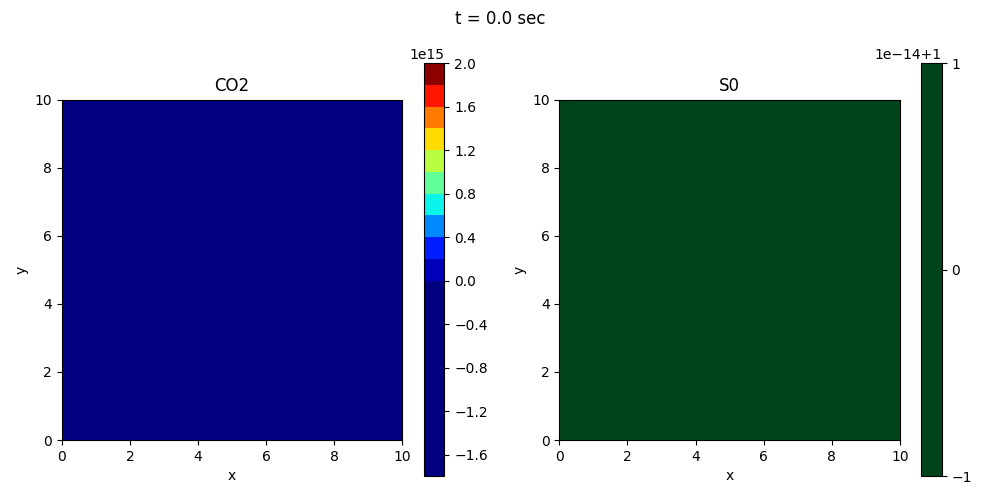

総合演習2 (2025年度)
2025年度
総合演習2
マクロ系シミュレーション
(第2回)
中島 涼輔
(システム情報)
@ NSSOL Lab.
2025/10/22
マクロ系シミュレーションの予定
-
第0回 (2025/10/01)
- 概要
-
第1回 (2025/10/08)
- 偏微分方程式の数値解法
- 楕円型方程式 (定常拡散方程式) のシミュレーション
-
第2回 (2025/10/22)
- 放物型方程式 (非定常拡散方程式) のシミュレーション
- 双曲型方程式 (移流方程式) のシミュレーション
-
第3回 (2025/10/29)
- ソレノイダル場 (非圧縮流体) のシミュレーション
- 逆問題, データ同化
-
第4回 (2025/11/05)
- 質問・課題
偏微分方程式の数値解法
-
まず, 時間微分と空間微分で取り扱いが異なる
- 時間方向: 初期条件からある時刻まで時間発展させる
- 空間方向: 領域の端に課されている境界条件に合う解を探す
-
時間微分を含まない偏微分方程式の場合
(前回勉強しました)
- 空間微分をなんらかの方法で近似し, 偏微分方程式を連立方程式 $\bm{f}(\bm{\mathrm{x}})=\bm{0}$ に変換する
- 特に, 線形の場合は連立一次方程式 $\mathsf{A}\bm{\mathrm{x}}=\bm{b}$ に変換できる
- あとは Newton 法や線形代数の数値計算法を使うだけ
- 未知ベクトル $\bm{\mathrm{x}}$ から偏微分方程式の近似解を構成する
-
時間微分を含む偏微分方程式の場合
(本日勉強します)
- 空間微分をなんらかの方法で近似し, 偏微分方程式を連立常微分方程式 $\frac{\upd\bm{\mathrm{x}}}{\upd t}=\bm{f}(\bm{\mathrm{x}},t)$ に変換する
- あとは常微分方程式の数値解法を使うだけ
プログラムコードの配布
-
https://github.com/r-nakashima-geophysics/2025-sogoenshu2-macro.git
で配布します
- macro_2nd_diffusion.ipynb と macro_2nd_advection.ipynb をダウンロードしてください
-
git pull でも可
git remote -v # リモートリポジトリ (origin) を確認 git pull origin main - 本日の演習と第2回小課題で使います
拡散方程式の復習
- 物質は濃度が高いところから低いところへ流れ, その流れが集まっているところでは, 時間とともに濃度が高くなる \[\bm{q}_c=-D\grad c\,,\qquad\frac{\uppartial c}{\uppartial t}=-\div\bm{q}_c+S_c\]
-
拡散係数 $D$ が空間的に一様な場合,
この偏微分方程式は放物型になる \[\frac{\uppartial
c}{\uppartial t}=D\nabla^2c+S_c\]
- 本日の前半は, この問題のシミュレーションを勉強します
-
同様の偏微分方程式が現れる他の現象の例
- 熱伝導: $\dfrac{\uppartial T}{\uppartial t}=\dfrac{k}{C}\nabla^2T+\dfrac{S_T}{C} $
- 良導体中の磁場: $\dfrac{\uppartial \bm{B}}{\uppartial t}=\dfrac{1}{\mu\sigma}\nabla^2\bm{B}$
演習問題
-
屋内の高い $\ce{CO2}$ 濃度は,
眠気を誘発することが
指摘されている (東北大学プレスリリース: https://www.tohoku.ac.jp/japanese/newimg/pressimg/tohokuuniv-press20240903_01web_sleep.pdf ) -
換気の重要性を調べるために, 屋内の $\ce{CO2}$
濃度を (非定常) 拡散方程式でモデル化してみましょう
- 屋内にいる人は, 単位時間あたり一定量の $\ce{CO2}$ を排出し続けると仮定する
- 人は動き回らないと仮定する. また, 簡単のため, 人の分布を連続関数で近似する: $S_c=S_0(x,y)$
- 簡単のため, 空気の流れの影響は無視する
- 時刻 $t=0$ に換気を開始したとする: $c(x,y,0)=c_0(x,y)$
- 解くべき偏微分方程式は $\dfrac{\uppartial c(x,y,t)}{\uppartial t}=D\left(\dfrac{\uppartial^2 c(x,y,t)}{\uppartial x^2}+\dfrac{\uppartial^2 c(x,y,t)}{\uppartial y^2}\right)+S_0(x,y)$
[例題1] 窓を開ける
-
1辺の長さ $L$ の正方形の部屋
- $y=L$ に窓, 他は壁
- $t<0$ では窓は閉まっていて, $t=0$ で窓を開け, 換気を開始したとする
- 初期 $\ce{CO2}$ 濃度は空間的に一様とする: $c(x,y,0)=c_0$
- 人は均一に分布 ($S_0=\text{定数}$) \[\dfrac{\uppartial c}{\uppartial t}=D\left(\dfrac{\uppartial^2 c}{\uppartial x^2}+\dfrac{\uppartial^2 c}{\uppartial y^2}\right)+S_0\]
- 格子点 $(x_i, y_j)$ 上の $\ce{CO2}$ 濃度を $c_{i,j}(t)$ とする

[例題1] 有限差分法を適用
- 格子点 $(x_i, y_j)$ 上で, 2階中心差分を適用すると \[\begin{align*} &\dfrac{\uppartial c}{\uppartial t}=D\left(\dfrac{\uppartial^2 c}{\uppartial x^2}+\dfrac{\uppartial^2 c}{\uppartial y^2}\right)+S_0\\ &\quad\rightarrow\quad\frac{\upd c_{i,j}}{\upd t}=D\left(\frac{c_{i+1,j}-2c_{i,j}+c_{i-1,j}}{\Updelta x^2}+\frac{c_{i,j+1}-2c_{i,j}+c_{i,j-1}}{\Updelta y^2}\right)+S_0\end{align*}\]
-
すべての格子点で差分式をつくると, 式が $N^2$
本できる. これらは $N^2$ 次元の未知ベクトル
$\bm{\mathrm{x}}={}^t(c_{0,0},c_{1,0},\ldots,c_{N-1,0},c_{0,1},\ldots,c_{N-1,N-1})$
を用いて $\dfrac{\upd\bm{\mathrm{x}}(t)}{\upd
t}=\bm{f}(\bm{\mathrm{x}}(t))$ と表せる
- 前回と同様, 計算領域をはみ出した格子点の値 ($c_{-1,0}$ など) が差分式に現れる場合は, 境界条件を用いて対処する
- あとは, (連立) 常微分方程式の数値解法を使うだけ
常微分方程式の数値解法の復習
-
$\dfrac{\upd\bm{\mathrm{x}}(t)}{\upd
t}=\bm{f}(\bm{\mathrm{x}}(t), t)$ を数値的に解く.
時間ステップ $t_{m}=t_0+m\Updelta t$
-
$t=t_m$ で時間方向に前進差分 (Euler 法) [陽解法]
\[\dfrac{\bm{\mathrm{x}}(t_{m+1})-\bm{\mathrm{x}}(t_m)}{\Updelta
t}=\bm{f}(\bm{\mathrm{x}}(t_m),t_m)\quad\rightarrow\quad\bm{\mathrm{x}}(t_{m+1})=\bm{\mathrm{x}}(t_m)+\Updelta
t\bm{f}(\bm{\mathrm{x}}(t_m),t_m)\]
- マクロ系シミュレーションでは, この方法を扱います
-
$t=t_{m+1}$ で時間方向に後退差分 (後退 Euler 法) [陰解法]
\[\dfrac{\bm{\mathrm{x}}(t_{m+1})-\bm{\mathrm{x}}(t_m)}{\Updelta
t}=\bm{f}(\bm{\mathrm{x}}(t_{m+1}),t_{m+1})\quad\rightarrow\quad\bm{\mathrm{x}}(t_{m+1})-\Updelta
t\bm{f}(\bm{\mathrm{x}}(t_{m+1}),t_{m+1})=\bm{\mathrm{x}}(t_m)\]
- (空間方向の差分とは異なり) $\bm{\mathrm{x}}(t_{m+1})$ は未知 (未来の値) であることに注意. そのため, 時間ステップを $\Updelta t$ だけ進める度に (非) 線形方程式系を解く必要がある
- 硬い微分方程式を解く場合に有効
-
その他, Runge–Kutta 法, 多段階法
(Adams–Bashforth 法など),
予測子・修正子法,
シンプレクティック数値積分など
- 社会系・ミクロ系シミュレーションで詳しく扱います
-
$t=t_m$ で時間方向に前進差分 (Euler 法) [陽解法]
\[\dfrac{\bm{\mathrm{x}}(t_{m+1})-\bm{\mathrm{x}}(t_m)}{\Updelta
t}=\bm{f}(\bm{\mathrm{x}}(t_m),t_m)\quad\rightarrow\quad\bm{\mathrm{x}}(t_{m+1})=\bm{\mathrm{x}}(t_m)+\Updelta
t\bm{f}(\bm{\mathrm{x}}(t_m),t_m)\]
[例題1] 実行してみてください
- macro_2nd_diffusion.ipynb
-
シミュレーション結果がおかしなことになっているのを確認できると思います
- 1格子点ごとに値が高くなったり低くなったりしている

何が起こっているか
- 以下, 見やすさのため $c_{i,j}^{(m)}\equiv c_{i,j}(t_m)=c(x_i,y_j,t_m)$ と書いたり書かなかったりする
-
2次元拡散方程式の $(x_i, y_j, t_m)$ での差分式
(生成項は無視)
\[\frac{c_{i,j}^{(m+1)}-c_{i,j}^{(m)}}{\Updelta
t}=D\left(\frac{c_{i+1,j}^{(m)}-2c_{i,j}^{(m)}+c_{i-1,j}^{(m)}}{\Updelta
x^2}+\frac{c_{i,j+1}^{(m)}-2c_{i,j}^{(m)}+c_{i,j-1}^{(m)}}{\Updelta
y^2}\right)\]
- 時間方向は Euler 法, 空間方向は2階中心差分を用いた場合, FTCS (forward time-centered space) スキームと呼ぶ
-
FTCSスキームに対し,
von Neumann の安定性解析を行う
- ここでは境界の存在を忘れて (周期境界条件だとみなして), $c_{i,j}^{(m)}$ を空間方向に (離散) Fourier 変換する \[c_{i,j}^{(m)}=\sum_{k=0}^{N-2}\sum_{l=0}^{N-2}\hat{c}_{k,l}^{(m)}\upe^{2\pi\sqrt{-1}\left(\frac{ik}{N-1}+\frac{jl}{N-1}\right)}=\sum_{k=0}^{N-2}\sum_{l=0}^{N-2}\hat{c}_{k,l}^{(m)}\upe^{\sqrt{-1}\left(\frac{2\pi k}{L}i\Updelta x+\frac{2\pi l}{L}j\Updelta y\right)}\]
von Neumann の安定性解析
- 2次元拡散方程式の差分式に代入. 線形の方程式なので, ある1つのモード $(k,l)$ に注目すると \[\frac{\hat{c}_{k,l}^{(m+1)}-\hat{c}_{k,l}^{(m)}}{\Updelta t}=D\hat{c}_{k,l}^{(m)}\left(\frac{\upe^{2\pi\sqrt{-1}\frac{k}{N-1}}-2+\upe^{-2\pi\sqrt{-1}\frac{k}{N-1}}}{\Updelta x^2}+\frac{\upe^{2\pi\sqrt{-1}\frac{l}{N-1}}-2+\upe^{-2\pi\sqrt{-1}\frac{l}{N-1}}}{\Updelta y^2}\right)\]
-
Euler の公式と半角の公式を使って整理すると
\[\frac{\hat{c}_{k,l}(t_{m+1})}{\hat{c}_{k,l}(t_{m})}=1-\frac{4D\Updelta
t}{\Updelta x^2}\sin^2\left(\frac{\pi
k}{N-1}\right)-\frac{4D\Updelta t}{\Updelta
y^2}\sin^2\left(\frac{\pi
l}{N-1}\right)\]
- 左辺は, 時間を $\Updelta t$ だけ進めると値がどれだけ変化するかの比を表している
-
($N$ が奇数なら) この比がとりうる値の範囲は
\[1-4D\Updelta t\left(\frac{1}{\Updelta
x^2}+\frac{1}{\Updelta
y^2}\right)\leq\frac{\hat{c}_{k,l}(t_{m+1})}{\hat{c}_{k,l}(t_{m})}\leq1\]
- 最小値をとるのは $k=l=(N-1)/2$ のとき
数値的安定性の条件
- もし, この最小値が $-1$ より小さければ, 常に $\left|\dfrac{\hat{c}_{(N-1)/2,(N-1)/2}(t_{m+1})}{\hat{c}_{(N-1)/2,(N-1)/2}(t_{m})}\right|>1$ ということになり, 少なくとも波長 $L/k=2\Updelta x$, $L/l=2\Updelta y$ のモードの振幅は, 常に増幅し続けてしまう (チェッカーボード模様ができる)
-
このような増幅は, 現実世界の拡散現象では起こらない
- 拡散方程式を差分で近似したときに生じてしまった非物理な偽の現象 (数値不安定)
-
数値不安定が起こらないようにパラメータの調節が必要
\[\Updelta t ≤ \frac{1}{2D\left(\frac{1}{\Updelta x^2}+\frac{1}{\Updelta y^2}\right)}\]
演習
- [例題1-1] 条件 $\Updelta t ≤ \dfrac{1}{2D\left(\frac{1}{\Updelta x^2}+\frac{1}{\Updelta y^2}\right)}$ を満たすように時間刻み幅 DT を変更して, 再度 macro_2nd_diffusion.ipynb を実行してみてください
演習
-
[例題1-2] シミュレーション時間 T_END
を十分な大きさにとると, 最終的に定常解に達し,
前回授業の macro_1st_diffusion2d.ipynb
でシミュレーションした結果と一致することを確認してください
-
[例題1-3] 拡散係数 D を大きく or
小さくすると,
定常解に達するのに必要な時間はどう変化しますか？その理由も考えてみてください
- ヒント: 次元解析より $L^2/D$ は時間の次元になる
- その他, いろいろ変更してみてください
移流方程式
-
空気や水の流れにより, 物理量が流されることを移流という
- 例えば, ある空気の塊に注目し, その中に含まれる $\ce{CO2}$ の濃度を考える. $\ce{CO2}$ の拡散が無視でき, さらにその空気の塊の体積が変わらなければ, 空気の塊が流される前と後で, それに含まれる $\ce{CO2}$ の濃度は変化しない
- これを数式で表すと \[\lim_{\Updelta t\to0}\frac{c(x+v_x\Updelta t, y+v_y\Updelta t, t+\Updelta t)-c(x,y,t)}{\Updelta t}=0\]
- 多変数関数の Taylor 展開を用いると \[\frac{\uppartial c}{\uppartial t}+\left(v_x\frac{\uppartial}{\uppartial x}+v_y\frac{\uppartial}{\uppartial y}\right)c=0\] この式を移流方程式という
- 流体力学では, Lagrange 微分 (物質微分) $\dfrac{\mathrm{D}}{\mathrm{D}t}\equiv\dfrac{\uppartial }{\uppartial t}+(\bm{v}\cdot\bm{\nabla})$ を導入して, 移流方程式を $\dfrac{\mathrm{D}c}{\mathrm{D}t}=0$ と書く
波動方程式と移流方程式の関係
-
1次元波動方程式 (波の速度: $V$);
双曲型の偏微分方程式
\[\frac{\uppartial^2\phi(x,t)}{\uppartial
t^2}=V^2\frac{\uppartial^2\phi(x,t)}{\uppartial
x^2}\]
- この偏微分方程式の一般解 (d'Alembert の解) \[\begin{align*} &\left(\frac{\uppartial}{\uppartial t}+V\frac{\uppartial}{\uppartial x}\right)\left(\frac{\uppartial}{\uppartial t}-V\frac{\uppartial}{\uppartial x}\right)\phi(x,t)=0\\ &\qquad\rightarrow\quad \phi(x,t)=f(x-Vt)+g(x+Vt)\end{align*}\]
- 速度 $V$ と $-V$ で伝わる
-
1次元移流方程式 (流れの速度: $v_x$)
\[\begin{align*}&\left(\frac{\uppartial}{\uppartial
t}+v_x\frac{\uppartial}{\uppartial
x}\right)\phi(x,t)=0\qquad\qquad\qquad\qquad\qquad\\
&\qquad\rightarrow\quad
\phi(x,t)=f(x-v_xt)\end{align*}\]
- 速度 $v_x$ で流される
- 解の性質が似ている. 双曲型に分類されることもある

移流拡散方程式
-
(空気や水の体積が変わらないような状況で)
移流と拡散の影響を両方考える場合は, 拡散方程式の
$(\uppartial/\uppartial t)$ を Lagrange 微分
$(\mathrm{D}/\mathrm{D} t)$ に置き換えればよい
\[\begin{align*}&\frac{\uppartial c}{\uppartial t}=D\nabla^2c+S_c\\ &\qquad\rightarrow\quad\frac{\mathrm{D}c}{\mathrm{D}t}=D\nabla^2c+S_c\end{align*}\]
この式を移流拡散方程式という
- 本日の後半は, この問題のシミュレーションを勉強します
[例題2] サーキュレーター
- 例題1の問題設定に加え, 部屋にサーキュレーターが設置されており, 空気の流れ \[\begin{align*} v_x&=-v_0\sin^2\left(\frac{\pi x}{L}\right)\sin\left(\frac{2\pi y}{L}\right)\\ v_y&=v_0\sin\left(\frac{2\pi x}{L}\right)\sin^2\left(\frac{\pi y}{L}\right) \end{align*}\] ができているとする ($v_0=\text{定数}$). この状態で $t=0$ に窓を開け, 換気を開始する
- 解くべき偏微分方程式は \[\frac{\uppartial c}{\uppartial t}+\left(v_x\frac{\uppartial}{\uppartial x}+v_y\frac{\uppartial}{\uppartial y}\right)c=D\left(\dfrac{\uppartial^2 c}{\uppartial x^2}+\dfrac{\uppartial^2 c}{\uppartial y^2}\right)+S_0\]
- macro_2nd_advection.ipynb を実行してみてください
[例題2] 再び数値不安定
-
条件 $\Updelta t ≤
\dfrac{1}{2D\left(\frac{1}{\Updelta
x^2}+\frac{1}{\Updelta y^2}\right)}$
を満たしているのに...

移流方程式 (中心差分) の数値的安定性
- 2次元移流方程式の $(x_i, y_j, t_m)$ での差分式 (FTCSスキーム) \[\frac{c_{i,j}^{(m+1)}-c_{i,j}^{(m)}}{\Updelta t}+v_x\frac{c_{i+1,j}^{(m)}-c_{i-1,j}^{(m)}}{2\Updelta x}+v_y\frac{c_{i,j+1}^{(m)}-c_{i,j-1}^{(m)}}{2\Updelta y}=0\tag{1}\]
-
von Neumann の安定性解析を行うと
\[\frac{\hat{c}_{k,l}(t_{m+1})}{\hat{c}_{k,l}(t_{m})}=1-\sqrt{-1}\frac{v_x\Updelta
t}{\Updelta x}\sin\left(\frac{2\pi
k}{N-1}\right)-\sqrt{-1}\frac{v_y\Updelta
t}{\Updelta y}\sin\left(\frac{2\pi
l}{N-1}\right)\]
- 絶対値をとるときは, 複素共役をかけることに注意して \[\left|\frac{\hat{c}_{k,l}(t_{m+1})}{\hat{c}_{k,l}(t_{m})}\right|^2=1+\left[\frac{v_x\Updelta t}{\Updelta x}\sin\left(\frac{2\pi k}{N-1}\right)+\frac{v_y\Updelta t}{\Updelta y}\sin\left(\frac{2\pi l}{N-1}\right)\right]^2 \tag{2}\]
-
この値は ($k=l=0, (N-1)/2$ を除いて) 常に
$1$ より大きいので,
必ず数値不安定になる
- 例題2では, 2次元移流拡散方程式を解いているので, 厳密にはこの状況とは少し異なるが, それでも数値的安定性の条件は厳しいものになっている
風上差分
- 移流方程式では, 空気や水の流れの上流 (風上) 側から物理量が流されてくるので, 上流側の格子点の値を使って差分をとってみる (風上差分という) \[\left.v_x\frac{\uppartial c}{\uppartial x}\right|_{x=x_i,\, y=y_j}\approx\begin{cases}v_x(x_i,y_j)\dfrac{c_{i,j}-c_{i-1,j}}{\Updelta x} & (v_x(x_i,y_j)>0) \\[5pt] v_x(x_i,y_j)\dfrac{c_{i+1,j}-c_{i,j}}{\Updelta x} & (v_x(x_i,y_j)<0)\end{cases}\]
-
風上差分は, $v_x$
の符号によって前進差分と後退差分を使い分けているようなものなので,
中心差分よりも精度が悪い
- しかし, この1次精度の誤差が拡散のようなはたらきをしてくれて, 計算を安定化させる効果がある (数値粘性という)
移流方程式 (風上差分) の数値的安定性
- 2次元移流方程式の差分式 (風上差分, $v_x, v_y>0$ の場合) \[\frac{c_{i,j}^{(m+1)}-c_{i,j}^{(m)}}{\Updelta t}+v_x\frac{c_{i,j}^{(m)}-c_{i-1,j}^{(m)}}{\Updelta x}+v_y\frac{c_{i,j}^{(m)}-c_{i,j-1}^{(m)}}{\Updelta y}=0\tag{3}\]
-
von Neumann の安定性解析を行うと
\[\begin{align*}\left|\frac{\hat{c}_{k,l}(t_{m+1})}{\hat{c}_{k,l}(t_{m})}\right|^2&=\left[1-\frac{2v_x\Updelta
t}{\Updelta x}\sin^2\left(\frac{\pi
k}{N-1}\right)-\frac{2v_y\Updelta t}{\Updelta
y}\sin^2\left(\frac{\pi
l}{N-1}\right)\right]^2\\
&\qquad+\left[\frac{v_x\Updelta t}{\Updelta
x}\sin\left(\frac{2\pi
k}{N-1}\right)+\frac{v_y\Updelta t}{\Updelta
y}\sin\left(\frac{2\pi l}{N-1}\right)\right]^2
\tag{4}\end{align*}\]
- この値は ($N$ が奇数なら) $k=l=(N-1)/2$ で最大
-
最大値が $1$ 以下になる条件 (CFL条件という) は
\[\Updelta t ≤ \frac{1}{\frac{v_x}{\Updelta x}+\frac{v_y}{\Updelta y}}\]
- CFL = Courant–Friedrichs–Lewy
演習
-
[例題2]
配布プログラムコード macro_2nd_advection.ipynb
のパラメータの初期設定はCFL条件を満たしているので,
移流項の計算を中心差分から風上差分に変更してください
def advection(self, v0: float) -> FloatArray: ### (中略) ### x: float y: float for ix in range(1, nx-1): x = dx * ix for iy in range(1, ny-1): y = dy * iy vx = func_vx(x, y, lx, ly, v0) vy = func_vy(x, y, lx, ly, v0) advection[ix, iy] = ( vx * (self.value[ix+1, iy] - self.value[ix-1, iy]) / (2*dx) + vy * (self.value[ix, iy+1] - self.value[ix, iy-1]) / (2*dy) ) return advection - うまく動いたら, いろいろ変更してみてください
数値的安定性の条件に関する補足
- 例題2では, (生成項ありの) 2次元移流拡散方程式を解いているので, まじめにやろうとすると2次元移流拡散方程式に対して von Neumann の安定性解析を行う必要がある
- しかし, 解くべき偏微分方程式を少し変更したり, 差分のとり方を変えるたびに, 毎回 von Neumann の安定性解析を行なって, 時間刻み幅の条件を求めるのはあまり実用的ではない
-
実際には, 解く問題に含まれている現象を分解して,
それぞれの現象に対する安定性の条件を全て満たすように時間刻み幅を設定することが多い
- 今の場合, \[\Updelta t\leq\min\left(\dfrac{1}{2D\left(\frac{1}{\Updelta x^2}+\frac{1}{\Updelta y^2}\right)}, \frac{1}{\frac{v_x}{\Updelta x}+\frac{v_y}{\Updelta y}}\right)\]
- さらに, 余裕をもたせて時間刻み幅を設定する場合も多い
課題について
- マクロ系シミュレーション (総合演習2の33/100点) の課題は加点方式で採点します (上限33点)
-
マクロ系シミュレーションの各回ごとに小課題
(1問あたり配点5-10点前後)
とマクロ系シミュレーションの最終回に最終課題
(1問あたり配点5-30点前後) を出します
- 自分ができそうな課題を選択し, 他の授業の忙しさを考慮して戦略的に提出してもらって構いません
- 小課題を提出しておくと, 最終課題の提出が楽になります
- 小課題を提出せずに, 最終課題だけ提出するのもアリです
- 好成績を狙っている人はたくさん課題を出してもらっても構いません (ただし33点が上限)
-
マクロ系シミュレーションの課題提出に,
生成AIを活用しても構いませんが,
内容を吟味してから提出してください
- どの生成AIモデルをどのように使ったか明記すること
第2回小課題
- [問2-1] 例題2の風上差分を完成させてください. また, 例題1と例題2に対して, 生成項分布 $S_0(x,y)$ や初期濃度分布 $c_0(x,y)$ などを変更した上で, 空気の流れの有無による結果の違いを比較した短めのレポートを作成してください. 作成したプログラムコード全体を提出する必要はありませんが, 一部を抜粋してレポートに載せても構いません (配点5点)
- [問2-2] スライドp.20の(1)式から(2)式が得られ, スライドp.22の(3)式からは(4)式が得られることを示してください (配点5点)
-
$\LaTeX$ や Microsoft Word などで作成し, pdf
形式でBEEF+から提出すること
- どの課題か分かるように問題番号をつけてください
- 第2回小課題の提出〆切: 2025/11/04 23:59
波動方程式の数値的安定性
- 2次元波動方程式の差分式 (時間と空間のどちらも2階中心差分) \[\frac{c_{i,j}^{(m+1)}-2c_{i,j}^{(m)}+c_{i,j}^{(m-1)}}{\Updelta t^2}=V_x^2\frac{c_{i+1,j}^{(m)}-2c_{i,j}^{(m)}+c_{i-1,j}^{(m)}}{\Updelta x^2}+V_y^2\frac{c_{i,j+1}^{(m)}-2c_{i,j}^{(m)}+c_{i,j-1}^{(m)}}{\Updelta y^2}\]
-
von Neumann の安定性解析を行い,
$\hat{c}_{k,l}^{(m+1)}=\xi_{k,l}\hat{c}_{k,l}^{(m)}$
とおくと
\[\xi_{k,l}+\frac{1}{\xi_{k,l}}=2-\frac{4V_x^2\Updelta
t^2}{\Updelta x^2}\sin^2\left(\frac{\pi
k}{N-1}\right)-\frac{4V_y^2\Updelta
t^2}{\Updelta y^2}\sin^2\left(\frac{\pi
l}{N-1}\right)\]
- この式は $\xi_{k,l}$ の2次方程式. 解と係数の関係より, $\xi_{k,l}$ が実数解をもたないとき, または重解のときは $|\xi_{k,l}|=1$. $\xi_{k,l}$ が相異なる2つの実数解をもつとき, 一方の解は $|\xi_{k,l}|>1$ となる. よって, 数値不安定が起こらない条件は, $\text{(判別式)}\leq0$ である: $\Updelta t ≤ \frac{1}{\sqrt{\frac{V_x^2}{\Updelta x^2}+\frac{V_y^2}{\Updelta y^2}}}$
- この条件もCFL条件の一種 (1次元の場合は, 波動方程式と移流方程式のCFL条件は一致する). ただし, 移流方程式とは異なり, CFL条件を満たしておけば, 中心差分でも数値不安定は起こらない